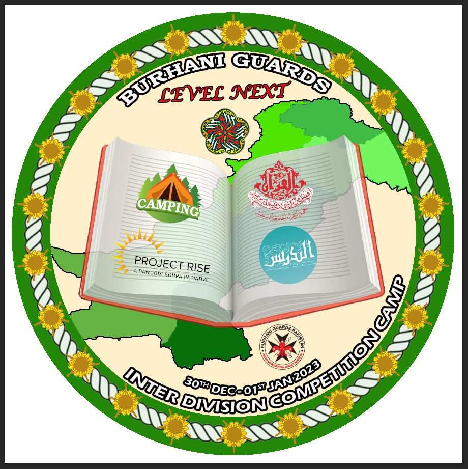

Burhani Guards
Inter Division Competition Camp
Camp Logo Competition
30th Dec 2022 – 1st Jan 2023
This logo is designed with the concept of different "Khidmat" performed by Burhani Guards(BG). As per the vision of Burhani Guards Idara, our main aim is to bring mumineen closer to Aqa Moula (T.U.S.). To achieve this we must be ready to do Next Level "Khidmat" and for that we must prepare ourselves in advance,for which this camp serves as training. Thus “Level Next”, the camp slogan indicates this desire on our part to train and groom ourselves so that we are better prepared in serving Aqa Moula (T.U.S.).
The different features of the logo are described below:
The logo’s outer circle contains a rope with 22 stars. The 22 stars indicates the 22 divisions in Zone ‘E’ of Burhani Guards Idara whereas the design of stars is taken from the Ranks given in BG. All stars are connected with a single rope that indicates the connectivity of all divisions with the platform of BG. The color used in outer circle is green which is the same as used in ranks beneath stars.
Burhani Guards is written on top of inner circle with "Level Next"; the camp slogan written beneath. We are honored to have "Burhani" in our name which associates us with 52 nd Dai ul Mutlaq, Syedna Muhammad Burhanuddin(R.A.). A logo of this year’s Milad Mubarak has been placed below this.
In center, we have placed map of Pakistan which portrays Burhani Guards Idara Zone ‘E’. A Book is placed in maps center as it’s the source of Knowledge. Every division is like a page in a book which is strongly bound together. Every page has its two sides, “Deen and Duniyah”, and members of BG perform khidmat in both aspects.
One complete page of the book is illustrated in emblem. On the right hand side page, there are logos of "Hifz Ul Quran" and "Tadrees". These two are decree of our beloved Moula who wishes that there is a Hafiz in each and every home and that all mumineen should complete Nisaab 1 and 2 asbaaq. The left hand page shows "Camping" and "Project Rise" logos. We decided to illustrate these two out of the many choices that are for "Duniyah" as currently these two aspects are the most relevant.
Logo of Burhani Guards Pakistan is placed below the book on right side whereas Inter division competition camp and it’s dates are written in bottom.
The theme "LEVEL NEXT" for Burhani guards indicates that BGs are stepping forward in khidmat of Aqa Moula (T.U.S.). As we all know, it’s a wish of Aqa Moula (T.U.S.) that each and every momin should take asbaaq regularly. We, BGs are also taking Asbaaq and with the help of Asbaaq, "the right knowledge" and Maarefat of Aqa Moula (T.U.S.), we are achieving LEVEL NEXT in khidmat.
By the Dua Mubarak of Aqa Moula (T.U.S.), and knowledge and training, Burhani guards is getting stronger in their souls. It’s a necessary requirement of khidmat in this Era when information is available on figertips. Sajdaat ut Shukar in Hazrat Imamiyah Nooraniyah for this azeem nemat of getting RAZA for the ILM of AALE MOHAMMED S.A.
Designed by Camp Logo Team.